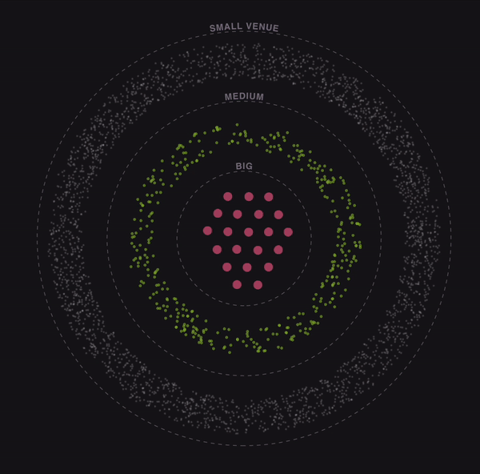
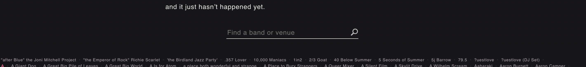

Reaching the Center Stage
A lot of bands that are formed, start because they are interested in music and want to make good music. Alongside making good music it is not too much to ask what are their odds of success and if the odds are in favour how long it will take them to be ‘successful’. Success is subjective, but in this case it will be fine to define success by the number of people they played for in a single event.
We had no answers to the odds or the time frame… until now.
Now that By Russell Goldenberg & Dan Kopf from The Pudding decided to use their data analytics and representational skills to analyse the data from the popular music event website Songkick spread over three years from 2013 - 2016, they have arrived hat how many bands make it big and how long did it take for each of them to reach the centre stage!
This crisp information visualization will help the fledglings to set realistic goals for their future as a band but might be slightly discouraging for their parents, if they find out about the odds their kids are fighting against!
They used two different views with common mark of a dot to deliver the information. The first of them is a modified polar coordinate system and the second one is a timeline. The specification of both the views and their encoding can be broken down in the following way.
The visual encoding does justice to the data they had for the bands that were successful even before coming to US, at least they could have included the date of their first show. This missing information would have painted a slightly more realistic picture.
The form of the visualization makes me realise that the band culture in US is extremely crowded. Music enthusiasts have a lot to choose from. But as we scroll down, the size of event increases but we see an exponential reduction in the number of bands until the crowd reached 7000+ only 21 of them remain. The flow of the viz is very smooth and there are adequate movements that are keeping the curiosity of the reader intact.
It is also important to mention that designers have taken due diligence in reverse scrolling. The way the bands (dots) fall back in line is very aesthetically pleasing. I am myself guilty of looking at the animation for at least a 100 times.
Embedding the music of top 21 bands is a masterstroke. It helps in spreading the music culture and make it extremely easier for the audience to discover new music and keeps the them in the same tab! (Great and Profitable UX!)
The narrative of reaching the ‘Centre Stage’ and making it big is clearly highlighted by the form used. But the pink 21 dots have the affordance of click that is absent. They could have added the Band’s name on the hower and their music played on click.
The second view is the good old timeline following the advice of Ben Shneiderman, telling us exactly what it should be how long does it take to make it big so that you plan accordingly!
Till now everything was great, realising article is over I decided to write the review, only on a closer look I realised that, that illegible and almost hyperlink look alike isn’t the footer but a third view highlighting all the bands that were somehow surviving!
It’s very empathetic of them to mention these bands bit the way it is done can be rethought. That absurd search bar serves as an hinderance to any casual reader.
Overall, that you so much for making this. Russel and Dan did a great job in telling us something that we needed to know but didn’t know.
A food for thought for the readers, instead of the dots reaching the ‘centre stage’ what would have happened if they were going out and reaching new heights? Would that have been a better visual?